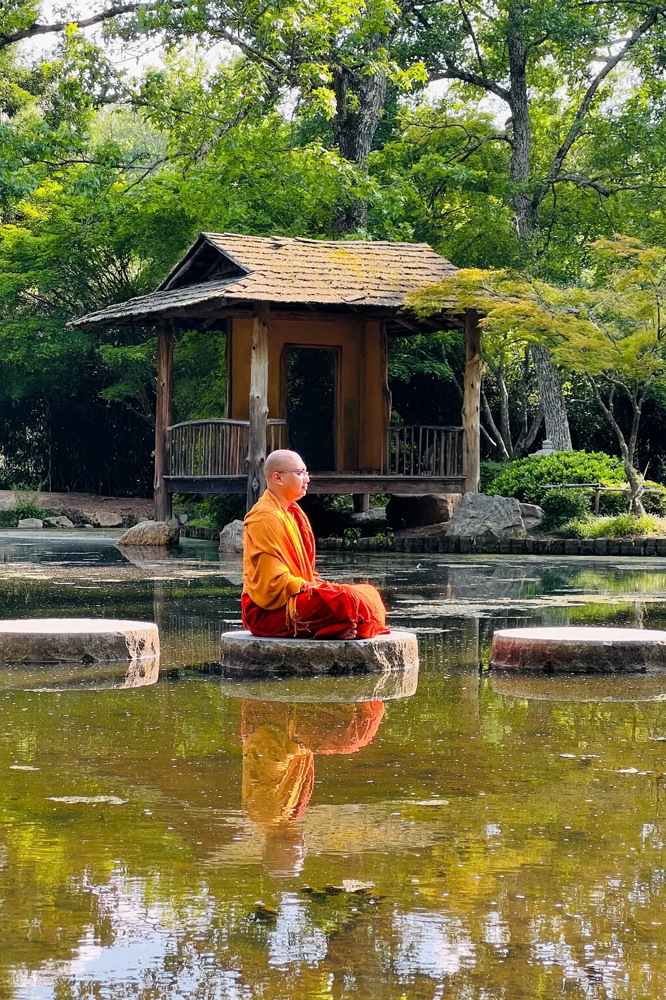

Design system · version 1.0
Open Hall
One source of truth for the Buddha Meditation Center — the website, the newsletter, the emails and the social feed. Built so that a volunteer who has never met us can pick it up and stay consistent.
Meditation for anyone, regardless of background.

The problem this solves
Many volunteers have maintained the site over the years, each reaching for their own fonts, colours and spacing. The result is a site whose pages barely look related. Everything below exists so nobody has to invent a value again.
Read this once. Then follow it.
01 · Principles
Three rules that settle most arguments.
When a decision is not covered by anything below, decide it with these, in order.
Air before ink
Whitespace is the material, not the leftover. When a layout feels wrong the first move is to remove something or add space — never to add a border, a shadow or a background panel. A calm page is mostly empty.
One thing at a time
One primary action per screenful, one idea per band. Two equally weighted buttons make a visitor pause; a single clear next step does not. Secondary actions are outlined, never filled.
Real over rendered
Real photographs of our own sessions, real session times, real numbers. No stock imagery, no illustrated monks, no icon sets standing in for a thought. This is also the single best defence against the generic AI-generated look.
02 · Colour
Paper, ink, clay.
The page is warm paper, never screen white. Type is warm near-black, never #000. One accent — clay — taken from the colour of the robes in our own photographs. Photography carries the rest of the colour; the interface stays quiet underneath it.
Paper — surfaces
Ink — type
Clay & moss — accents
Contrast, checked
Ratios are against --paper. Everything used for body-size text clears WCAG AA (4.5:1); most clear AAA (7:1).
| Token | On paper | Rating | Allowed for |
|---|---|---|---|
| --ink | 15.3 : 1 | AAA | Anything |
| --ink-soft | 8.0 : 1 | AAA | Body copy at any size |
| --ink-faint | 6.2 : 1 | AA | Meta and captions at 13px and up |
| --clay-text | 6.7 : 1 | AA | Eyebrows, times, small accented text |
| --clay-deep | 8.0 : 1 | AAA | Button fill with --paper text |
| --moss | 8.1 : 1 | AAA | Links and labels in the study sections |
| --clay | 3.9 : 1 | AA large | 24px+ type, rules, marks. Not body text |
| --ink-ghost | 3.4 : 1 | — | Hairlines and decoration only. Never text |
Banned
The old navy read as enterprise software. The old amber was uncomfortable at large areas. Clay is the same warmth without the glare — and it is literally the colour already present in every photograph we own.
03 · Typography
Two families, seven sizes.
Abhaya Libre for anything that carries meaning; Source Sans 3 for anything you operate. Both are open source, both cover Latin and Sinhala, and neither appears in the font pool that every AI-generated landing page draws from.
Display · Abhaya Libre
Sit with a monk
බුදු මැදුර · 0123456789
Weights 400–600 only. 700 is reserved for the wordmark. Heavy display type is exactly what made the previous site feel corporate; the fix for "too heavy" is a lighter weight at a larger size, never a bolder one.
Interface · Source Sans 3
Guided meditation with Buddhist monks in Greater Washington DC. No experience needed.
Reserve a cushion
Weights 400 / 500 / 600. Navigation, buttons, body copy, form labels, eyebrows, metadata. Never used above 1.5rem — at that size the display face takes over.
The scale
A minor third (1.25). Every heading on the site is one of these. If a size is not on this list, it does not exist.
| Setting | Value | Why |
|---|---|---|
| Body line-height | 1.7 | Loose leading is the cheapest way to make a page feel unhurried. |
| Display line-height | 1.02 – 1.14 | Large type needs tight leading or it falls apart. |
| Display tracking | −0.014em to −0.024em | Tightens as size grows. Never positive. |
| Eyebrow tracking | +0.15em, uppercase | The only place letter-spacing opens up. |
| Reading measure | 40rem (~64 characters) | Prose never runs wider than this, on any screen. |
| Balance | text-wrap: balance on headings, pretty on paragraphs | Stops orphans without manual line breaks. |
Never use: Inter, Cormorant Garamond, Playfair Display, Fraunces, Instrument Serif, Geist, Source Serif 4. Cormorant + Inter in particular is the signature pairing of 2025–26 AI-generated landing pages, including our own sister site — matching it would date the rebuild before it launched.
04 · Space & rhythm
Nine steps, three bands.
Every gap on the site comes from this scale. A value outside it is a bug, and it is the single most common way a design system decays once volunteers start editing.
Vertical rhythm
| Token | Value | Use |
|---|---|---|
| --band-sm | 2 – 3.5rem | A section that continues the thought above it. |
| --band | 3.5 – 7rem | The default. Nearly every section. |
| --band-lg | 5 – 10rem | Reserved for a genuine chapter break. |
All three are clamp() values, so a phone gets proportionally less air than a desktop without a single media query.
05 · Layout
Asymmetric, hairlined, unboxed.
| Measure | Width | Use |
|---|---|---|
| .u-wide | 76rem | Full layouts: heroes, mosaics, the footer. |
| .u-mid | 58rem | Section introductions. |
| .u-prose | 40rem | Blog posts and Dhamma articles. Never wider. |
| .u-narrow | 32rem | Standfirsts and form copy. |
| Gutter | clamp(1.25rem, 5vw, 4rem) | Page edges, all breakpoints. |
The split
Text and photograph sit side by side at 5 : 7 — never 50 : 50. Symmetry reads as template; a deliberate imbalance reads as a considered page. The photograph is always a whole picture with words beside it, never a background with text laid over it.
Three breakpoints, and only three
| Width | What changes |
|---|---|
| 62rem (992px) | Splits stack, photograph moves above the words, tiles drop to two across. |
| 52rem (832px) | Navigation collapses to the menu sheet. Fact grids go single column. |
| 34rem (544px) | Tiles go single column, buttons go full width, the place-line leaves the wordmark. |
Surfaces
Depth comes from paper tone, never from shadow. There are no cards on this site. A group of things is separated by a hairline and space, which is quieter and ages better than a box.
06 · Components
Everything the site is built from.
Live specimens. Each one is the real component from system.css, not a picture of it.
Buttons
| Variant | Fill | Rule |
|---|---|---|
| .btn | Ink | The primary action. One per screenful. |
| .btn--ghost | Outline | Every secondary action. Never a second filled button. |
| .btn--clay | Clay | One conversion per page, and only where giving or registering is the whole point. |
| .act | Text + rule | The quietest action. The rule grows on hover. |
Eyebrow, time, meta
This week
Sundays, 5:00 – 7:00 pm
The time is the headline. A meditation centre's most valuable piece of content is "Sunday, 5:00 pm", so it is set in the display face in clay — not shrunk into grey metadata the way most sites treat it.
The breath mark
One circle, once per page, beside the eyebrow in the hero. It expands and contracts on an 11-second cycle — 4s in, 1.5s hold, 4s out, 1.5s hold — the ratio used in guided practice, not a decorative loop. A visitor who watches it for ten seconds has already slowed their breathing. It is the only looping animation in the entire system, and it stops for prefers-reduced-motion.
The rule list
This replaces card grids everywhere. Cards create visual noise and force every item to the same height; hairline rows create rhythm and let content be its natural length.


The photo tile


Proof
Numbers set in the display face on a hairline row. Never four identical icon cards — that pattern is the visual signature of a template, and it makes real results look invented.
- 6,000+people have joined a session since we opened our doors
- 4.90 / 5average rating across every meditation program we run
- 82%reported relief from sadness after a single sitting
Sit with this
A single instruction, given away free, on every major page. This is the component that satisfies the brief's hardest requirement: a visitor who never clicks anything still leaves with something useful.
Sit with this · one minute
Breathing in a long breath, know that you are breathing in a long breath. That is the whole instruction. Everything after it is practice.
Ānāpānasati Sutta · the first step of sixteen
Stillness
A band of nothing between chapters — a short hairline and a great deal of air. Most sites are afraid of empty space. This is the one place we spend it deliberately, and it is the most "meditation" element in the system.
Newsletter capsule
One field, one button, one sentence of reason above it. Brevo takes the POST directly; there is no intermediate page.
Questions
Do I need to book?
For Sunday evening a reservation helps us set out enough cushions, but nobody is turned away.
Is there a fee?
No. Nothing at the center costs money. There is a donation box near the door and it is entirely optional.
Tags
07 · Motion
Slow enough to read as an exhale.
Four movements exist on this site. There is no fifth. Motion that draws attention to itself is the opposite of what we are selling.
| Movement | Duration | Curve | Where |
|---|---|---|---|
| Section reveal | 900ms, 90ms stagger | 0.16, 1, 0.3, 1 | Opacity + 14px rise, once, on scroll into view. |
| Photograph hover | 1400ms | 0.32, 0.72, 0, 1 | Scale to 1.035. Slow enough that it reads as drift. |
| Underline grow | 600ms | 0.32, 0.72, 0, 1 | A clay hairline extends from the left on hover. |
| Breath mark | 11s, looping | 0.32, 0.72, 0, 1 | Once per page, in the hero. The only loop. |
Most sites reveal in 400ms. Nine hundred is deliberate: it is roughly the length of a relaxed out-breath, and it is the difference between a page that feels snappy and a page that feels calm. Every one of these is disabled under prefers-reduced-motion: reduce, and the page is fully usable with JavaScript switched off.
08 · Photography
Photography is the architecture.
The interface is deliberately quiet so the photographs can carry the colour and the feeling. This only works if the photographs are real.
✓ Use
- Real photographs of our own sessions, halls and people.
- Faces with eyes closed, mid-practice. Unposed.
- Wide shots that show the room is ordinary and welcoming.
- The building, the grounds, the meal line, the cushions.
- Whole pictures, square corners, nothing laid over them.
✕ Never
- Event posters with burnt-in text (
hero-session.webp,day-long-saturday.webp,richmond.jpeg). - AI generations — any file named
ChatGPT…,Gemini…,Image_fx…. - Stock imagery of any kind, especially silhouettes at sunset.
- Illustrated monks, lotus icons, mandala wallpaper.
- Product shots (
community-meal.jpegis branded bottles).
Crops and focal points
Our photographs are mostly landscape phone shots, so a 4:5 tile crop can easily remove the subject. Every file has a declared focal point in scripts/build-concept.mjs (and in the Astro build, in the image data) — set it once, per file, never inline in a page.
| Ratio | Class | Use |
|---|---|---|
| 3 : 4 | .fig--portrait | Standing figures. The home hero. |
| 4 : 5 | .fig--tall | Programme tiles. |
| 1 : 1 | .fig--square | Inline supporting photographs, list thumbnails. |
| 3 : 2 | .fig--photo | Page heroes and split sections. |
| 21 : 9 | .fig--wide | The one wide "door" per page. |
The arch
The home hero photograph has an arched top — an architectural echo of a shrine doorway, and the reason the home page can honestly say "four doors". It appears once on the entire site. Used twice it becomes a motif; used everywhere it becomes a theme.
09 · Voice
Friendly, unhurried, specific.
Write like someone who already sat in the hall and is telling a friend what it was like. Do not sell enlightenment; do not sound like a temple brochure that assumes the reader is Buddhist.
| Instead of | Write |
|---|---|
| "Embark on a transformative journey of inner peace" | "A quieter mind, one sitting at a time" |
| "Register now to secure your spot!" | "Reserve a cushion" |
| "Our world-class instructors" | "A monk talks you through it the whole way" |
| "Suitable for all experience levels" | "No experience needed, no belief required" |
| "Unlock your potential" | "82% reported relief from sadness after one sitting" |
| "Learn more" | "Plan your visit" · "Read the evaluation report" |
Say the time and the address
Concrete detail builds more trust than any adjective. "Sundays, 5:00 – 7:00 pm, 5004 Stone Rd" does more work than a paragraph about serenity.
Answer the unasked question
A first-time visitor is quietly worried about doing the wrong thing. Tell them shoes come off, chairs exist, nothing is expected of them.
Keep religion out of the first fold
Not because we hide it — the About page is explicit — but because the front door is mindfulness for anyone, and the brief is emphatic about that.
Never exclaim
No exclamation marks, no urgency, no countdown timers. A visitor's journey here runs one to six months. We are not closing a sale this afternoon.
10 · Funnel
Where each component does its job.
The site is a six-stage funnel, not a set of pages. This table is how the design system and the content strategy stay attached to each other.
| Stage | Page | The component doing the work | Exit with |
|---|---|---|---|
| 1 · Arrive | Home | Arch hero, breath mark, proof row | Trust, and a session time |
| 2 · Believe | Results | Proof row, four testimonies | Evidence it works |
| 3 · Attend | Programs, Visit | Rule list, steps, questions | A booked cushion |
| 4 · Return | Programme details | "Also in this group", sit-with-this | A second date |
| 5 · Serve | Volunteer, Give | Fact grid, clay button | An hour, or a gift |
| 6 · Study | Teachings, Sutta class | Plain rule list, moss accent | An article, then a class |
The newsletter capsule appears at the foot of every page, because stage 1 to stage 3 can take months and the email list is what holds someone across that gap. It is the one component that repeats without exception.
11 · Ecosystem
Beyond the website.
The same paper, the same clay, the same two typefaces. A newsletter that looks like the site is worth more than a newsletter that looks designed.
Weekly email · Brevo
This week
Sunday, and a note on irritation
Sundays, 5:00 – 7:00 pm
One paragraph worth reading, then the times. Nothing else. Ever.
Single column, 40rem max. Ink button. Photograph at the top only if it is a real one from that week.
Instagram · 1:1
Quote posts are display type on warm paper, no photograph. Photo posts are the photograph alone with the caption doing the talking. Never text over an image.
| Surface | Ground | Type | Rule |
|---|---|---|---|
| --paper | Display headline, sans body | One button, one photo, 40rem wide. | |
| Newsletter | --paper | Same | Times first, reflection second, nothing third. |
| Instagram quote | --paper-warm | Display 500 | Breath mark bottom-right as the signature. |
| Instagram photo | The photograph | None on the image | All words live in the caption. |
| Event poster | --paper | Display + clay time | Time biggest after the title. Address always present. |
| Slides | --paper | Display 500 | One idea per slide. No bullet lists of five. |
12 · Do & don't
How this stays out of the slop.
The brief asked us to avoid the visual pattern common to AI-generated sites. That pattern is not one mistake — it is a specific, listable set of them.
✕ The tells we refuse
- Cormorant or Playfair headlines over Inter body copy
- Three or four identical icon cards in a row
- Gradient text, glassmorphism,
backdrop-filter - Purple-to-blue gradient meshes and glowing orbs
- 16px rounded corners on absolutely everything
- Drop shadows used to fake depth
- Text laid over a darkened photograph
- Stock photos of serene people on clifftops
- Emoji as section icons
- "Transform your life" hero copy
✓ What we do instead
- Abhaya Libre 500 over Source Sans 3 — Sinhala-capable, rare
- Hairline rule lists with real thumbnails
- Flat warm colour; depth from paper tone only
- A 2.6% paper grain so the ivory is not screen-flat
- 2px corners on photographs, pills only on buttons
- Hairlines at 13% ink, nothing heavier
- Whole photographs with the words beside them
- Our own halls, our own people, phone shots and all
- Words, set properly
- The time and the address
The five that matter most
Never invent a value
If the spacing, size or colour you want is not a token, the answer is the nearest token — not a new number. This is the rule that keeps the system alive after we hand it over.
One primary action per screenful
Two filled buttons of equal weight is the most common way a calm page turns into a busy one.
No card grids
Use the rule list. If you genuinely need a grid, use photo tiles — never boxes with borders and shadows.
No text over photographs
A photograph stays a whole picture. Words sit on the paper beside it.
When in doubt, delete
Every element on this site has to justify its presence against empty space, and empty space is winning more often than it loses.
13 · Tokens
Copy this, change nothing.
The complete token set, as it ships in src/styles/tokens.css. Colour is in oklch so the ramps stay perceptually even when someone needs a new step; hex equivalents are in the colour section above for Canva and print.
/* Paper — the page is paper, never white */
--paper oklch(0.978 0.008 85) #faf7f2
--paper-warm oklch(0.958 0.014 84) #f6f1e7
--paper-deep oklch(0.928 0.020 82) #eee6d9
--paper-edge oklch(0.902 0.023 80) #e7ddce
/* Ink — warm near-black, never #000 */
--ink oklch(0.245 0.015 62) #261f19 15.3:1
--ink-soft oklch(0.420 0.018 60) #554b43 8.0:1
--ink-faint oklch(0.480 0.016 60) #655c55 6.2:1
--ink-ghost oklch(0.620 0.014 60) #8d847e rules only
/* Clay — the robe in our own photographs */
--clay oklch(0.600 0.108 42) #b6694b large type only
--clay-text oklch(0.470 0.105 40) #8b432a 6.7:1
--clay-deep oklch(0.430 0.098 38) #7c3a25 8.0:1
--clay-wash oklch(0.960 0.018 72) #faf0e5
/* Moss and sand */
--moss oklch(0.410 0.042 152) #39513f 8.1:1
--moss-wash oklch(0.946 0.016 150) #e6f0e8
--sand oklch(0.872 0.050 78) #e7d2b1 selection only
/* Hairlines — the only borders in the system */
--line ink / 0.13
--line-soft ink / 0.07
--line-strong ink / 0.22
/* Type */
--font-display "Abhaya Libre", "Noto Serif Sinhala", Georgia, serif
--font-ui "Source Sans 3", "Noto Sans Sinhala", system-ui, sans-serif
--step--2 0.75rem --step-2 clamp(1.3125rem, 1.22rem + 0.42vw, 1.5rem)
--step--1 0.8125rem --step-3 clamp(1.55rem, 1.36rem + 0.85vw, 2rem)
--step-0 1.0625rem --step-4 clamp(1.9rem, 1.55rem + 1.6vw, 2.9rem)
--step-1 1.1875rem --step-5 clamp(2.35rem, 1.75rem + 2.7vw, 4.1rem)
--step-6 clamp(2.9rem, 1.9rem + 4.4vw, 5.4rem)
/* Space — nothing outside this scale */
--space-1 4px --space-4 16px --space-7 48px
--space-2 8px --space-5 24px --space-8 64px
--space-3 12px --space-6 32px --space-9 96px
/* Rhythm and measure */
--band-sm clamp(2rem, 4.5vw, 3.5rem) --wide 76rem
--band clamp(3.5rem, 8vw, 7rem) --mid 58rem
--band-lg clamp(5rem, 12vw, 10rem) --prose 40rem
--gutter clamp(1.25rem, 5vw, 4rem) --narrow 32rem
/* Radii — photographs are essentially square */
--r-xs 2px --r-sm 4px --r-md 10px --r-pill 999px
--arch 50% 50% 4px 4px / 30% 30% 4px 4px
/* Motion */
--ease-breath cubic-bezier(0.16, 1, 0.3, 1)
--ease-calm cubic-bezier(0.32, 0.72, 0, 1)
--t-fast 200ms --t-base 420ms --t-slow 900ms
14 · For volunteers and AI agents
How to work in this without breaking it.
The site is Astro, the content is files, and the design system is one stylesheet. That combination is deliberately easy for a coding agent — including Vidu — to edit safely.
Read three files first
PRODUCT.md(who we are),DESIGN.md(this system in text),AGENTS.md(how the repo works). An agent that has read those will not invent a colour.Content is data, not markup
Programmes live in
src/data/programs.ts; the pages are generated from it. Blog and Dhamma articles are.mdxfiles. Adding a programme means editing one object — never copying a page.Tokens are the only vocabulary
Every value in
system.cssis a variable. A pull request that contains a raw hex code, a raw pixel gap or a new font is wrong by definition, and that rule is simple enough to be checked automatically.Components are local until they repeat three times
Do not build an abstraction for a section that appears once. Three uses earns a component; two does not.
Photographs need a focal point
A new image is not finished until its
object-positionis recorded alongside it, or it will lose its subject in the first square crop.
The one-line test
Would a person who has just sat for forty minutes find this page restful?
If the answer is no, the fix is almost always to remove something.